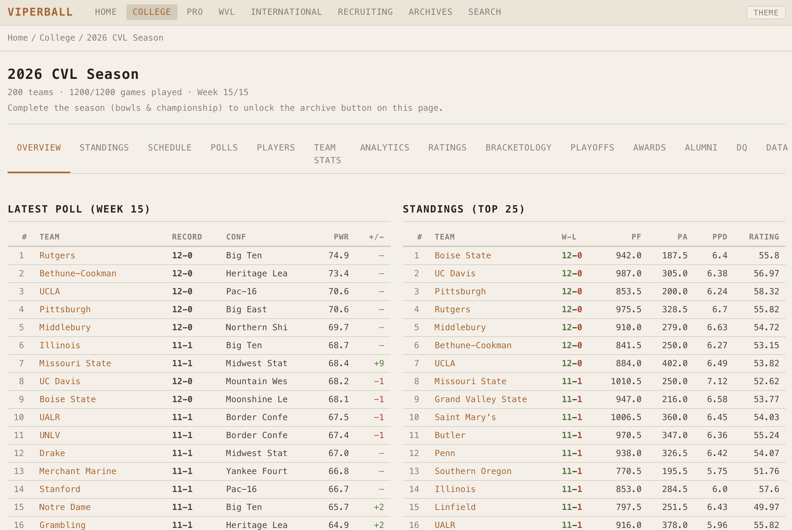
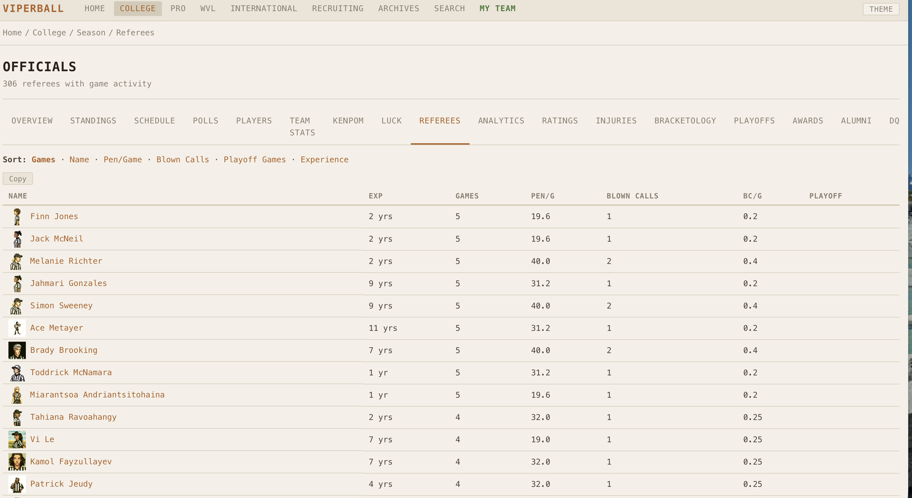

Viperball
A sport that never existed — invented, ruled, simulated, and given a world to live in.

Viperball started as a hypothetical in a Reddit thread: what would football look like if it had evolved from the pre-forward-pass era — kicking-led, two-way play, lateral chains carrying the ball forward? I answered it completely. I designed the sport, wrote its rulebook, built a simulation engine that plays it, populated a 280-team universe to play it in, and shipped four different ways to watch it happen.
It’s one project that breaks into six: a game-design exercise, a simulation problem, a data-generation problem, and three distinct interfaces. Each section below stands on its own.
The Sport
An invented game with an internally consistent rulebook.
Viperball is a gridiron code with its own logic. Six downs to gain twenty yards. The ball moves by running, lateral chains, and kick passes (a kicked ball to a downfield teammate). A six-channel scoring system where a touchdown is worth 9, a live-play drop kick is worth 5, and a half-point “bell” rewards a loose-ball recovery. There’s a position native to the sport — the Viper, a pre-snap-motion mismatch machine — and a sixth official invented to govern it.
The creative discipline here is coherence: every rule implies a strategy, every strategy implies a counter, and the whole thing has to hold together as something a coach could actually scheme around. The full rulebook runs to dozens of pages — field, clock, penalties across five phases of play, weather, overtime, officiating.
Output: a complete, original ruleset (README.md, RULES.md).
The Simulation Engine
A contest-based stochastic model that turns rules into believable games.
Every yard, catch, and kick is a contest between specific players’ attributes, resolved with probability. The design insight that makes games feel real: skill proximity creates variance. Evenly-matched players produce wild, play-to-play swings; a mismatch produces consistent, grindy outcomes. On top of that sit hot streaks that narrow a player’s variance toward the high end, a fatigue cliff that forces real depth-chart usage, a kicker-range model where the kicker’s rating actually determines range, weather effects, and nine distinct offensive schemes that reshape the underlying math.
~14,500-line core · pure Python · a tuned probability model.
The World
280+ teams across four leagues, most of them procedurally generated.
The sport needed somewhere to live, so I built the universe: a 187-team women’s collegiate league mapped onto real universities, plus pro, women’s-pro, and international circuits — each team a structured record with a 36-player roster, ratings, an identity, and a recruiting pipeline. Generation scripts produce region-aware names, coaching staffs, referees, and rosters at scale, so the world can grow without hand-authoring every player. Multi-season dynasty mechanics run on top: recruiting, a transfer portal, signing day, coach hiring and firing, polls, awards, and bowl games.

~280 team records · 4,500+ players · JSON-backed · procedural name / roster / staff generators.
The Interactive App
A play-it-yourself sim: call plays, run a dynasty, act as commissioner.
The hands-on interface where you advance a season week by week, manage a program, or run a whole league as commissioner. Built in NiceGUI (a Python-native, Vue-backed UI framework) and served alongside the API in a single process, it covers play-calling, dynasty management, draft and free-agency flows, and a multi-league spectator mode — all reading live from the simulation engine.
NiceGUI (Vue under the hood) · Plotly charts · FastAPI + uvicorn, single-process · deployed on Fly.io.
The Stats Terminal — viperball.xyz
A Bloomberg-terminal-style stats portal for a fictional sport.
The public face of the project: a fast, keyboard-driven, server-rendered stats site that updates in real time as simulations run. College, Pro, WVL, and International sections; box scores, standings, player leaderboards, recruiting, and archives — the full statistical apparatus of a real sports league, for a fictional sport. It ships with a rack of switchable themes (Bloomberg Light, Navy & Ivory, Dark Ocean, CRT, Solarized) and “?” keyboard shortcuts.
FastAPI sub-router · Jinja2 server-side rendering.
The Method
How I actually built this: design specs in, after-action reports out.
Every major system shipped with a written rationale — 30+ design specifications and after-action reports documenting why each mechanic exists and what changed. Balance was treated as an empirical problem. I ran 200+ game batch simulations and validated aggregate scoring, turnover rates, and conversion cascades against explicit design targets before shipping a change.
Design-spec-driven · batch-validated · fully documented decision trail.
Stack
Python 3.11 · FastAPI · NiceGUI · Pydantic · Plotly · Jinja2 · pandas / numpy · Docker · Fly.io.
Roughly 120,000 lines of Python across the engine, four frontends, the data universe, and the generation tooling.
Writing
A three-part series in Sideline Engineering, the newsletter where the design history of Viperball lives.